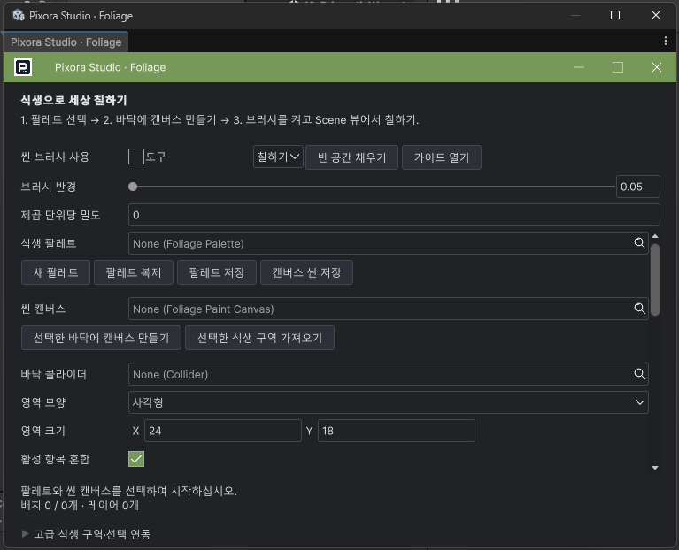
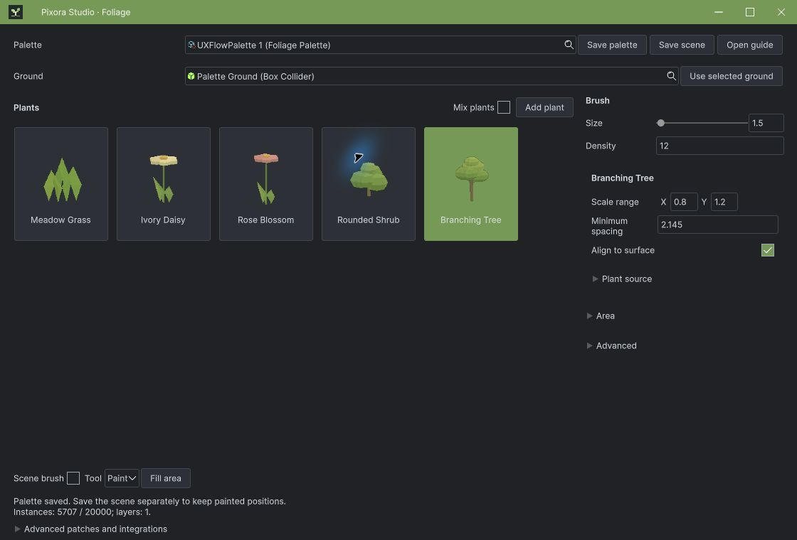
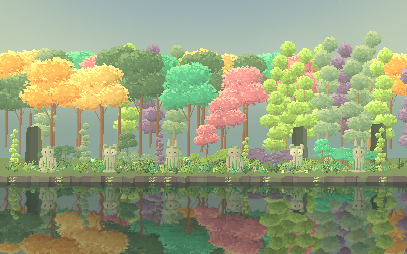
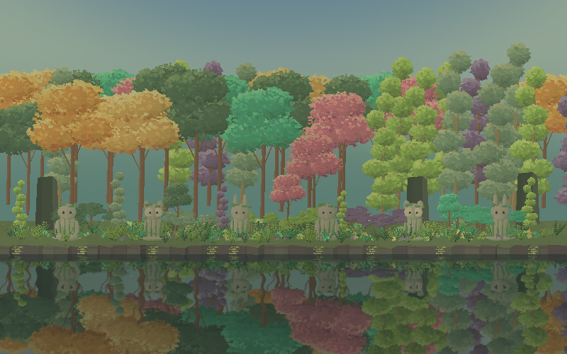
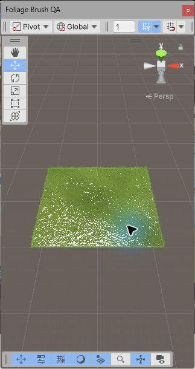

Tracefolio REPORTS & ISSUES
Tracefolio REPORTS & ISSUES식생 밝기·팔레트 저장 흐름·전용 창과 로고 개선
검증 대기13씬 밝기·전용 창/로고·저장 후 식생 카드 UX를 개선했습니다. 실제 Scene 드래그와 Ctrl+Z/Ctrl+Y, 저장 후 재열기의 개체 수 보존까지 추가 검증했습니다.
작업 결과
요청한 다섯 가지 수정은 소스와 검토 패키지에 반영했습니다. 실제 Scene 드래그5707→6017, Ctrl+Z5707, Ctrl+Y6017, Ctrl+S 저장 후 재열기6017을 확인했습니다. 기존5,086개 Native API 검사와 UI 이벤트10건도 통과했습니다. Affinity .af 저장, Alt/Shift 세부 입력·팝업 키보드·9언어 전체 외형·기존 출시 QA는 남습니다.
변경 내용
적용 내용
| 요청 | 반영 내용 |
|---|---|
| 너무 밝은 예제 | 식생13씬 광원·그림자색 조정. 숲 Bloom0.42→0.18, 노출0.91→0.86, 하늘 톤 낮춤. 수목·동상·강물과 기존 배치/예제 기능 보존. |
| Unity 기본 창 | 일반 Show 대신 공통 프레임의 ShowPopup·복원·창 등록 사용. 제목줄과 기본 Unity 테두리 중복 제거. |
| 보이지 않는 팔레트 | 실제 메시·재질로 렌더링한 식생 카드. 샘플 설치 시 잔디·데이지·꽃·관목·나무5종을 새 파일에 제공. 단일 선택과 혼합 분리. |
| 전용 로고 | 실제 Affinity3.3.1.4940에서13개 벡터 레이어로 새싹·지면 심벌 제작. 제목줄·시작·Inspector·창 목록 아이콘·문서에 적용. .af 저장은 아래 제한 참조. |
| 이해하기 어려운 저장·메뉴 | 시작하기→파일명/Assets 내 폴더→저장 후 편집 도구 표시. 취소하면 시작 화면 유지. 기존 파일 열기도 창 안에서 선택. 기본은 식생 카드·바닥·브러시, 나머지는 접기. |
사용: 팔레트 시작하기 → 파일명·프로젝트 폴더 → 팔레트 저장 → 식생 카드 선택 → 바닥 지정/선택한 바닥 사용 → 씬 브러시 또는 영역 채우기. 팔레트와 씬은 따로 저장합니다. 샘플을 제외한 설치에서는 자신의 식생 프로필을 추가합니다.


 
| 씬 | 이전 실제 화면 | 현재 실제 화면 |
|---|---|---|
| 01-MeadowBreeze | 이전 | 현재 |
| 02-BlossomWalk | 이전 | 현재 |
| 03-ShrubGarden | 이전 | 현재 |
| 04-YoungWoodland | 이전 | 현재 |
| 05-ContactTrail | 이전 | 현재 |
| 06-SteppedRhythm | 이전 | 현재 |
| 07-SharedGusts | 이전 | 현재 |
| 08-CloudLight | 이전 | 현재 |
| 09-MixedGarden | 이전 | 현재 |
| 10-ExtensionGrove | 이전 | 현재 |
| 11-PixelCameraGarden | 이전 | 현재 |
| 12-PrismaticWoodland | 이전 | 현재 |
| 13-PixelCameraWoodland | 이전 | 현재 |


검증
- 최종 소스6개 어셈블리 컴파일 통과. 관리형 분포 검사95,522건,137개 UI 키의9언어/치환 인자/바인딩 검사 통과.
- Undo 수정본 실제 Unity 검사5,086건: Collider·타원/다각형·제외 영역·Undo/Redo 정확한 배치 복원·팔레트/씬 저장 재열기·열린 창의9언어 대표 필드 갱신 통과. 전체9언어 외형을 승인한 검사는 아닙니다.
- 최종 저장·바닥 연결 UI 이벤트 검사10건 통과. 새 파일5종, 저장 전/후 화면, 실제24×20 바닥 크기,5,707개 채우기·비우기·Undo·씬/팔레트 저장 확인. 이 검사는 UI Toolkit 버튼 이벤트 호출이며 실제 마우스와 구분합니다.
- 실제 마우스: 시작/취소, 나무 카드 선택에 따른 설정 변경, 공통 메뉴 표시와 Erase 선택값 반환 확인. 이후 실제 Scene 드래그·Ctrl+Z/Ctrl+Y·Ctrl+S와 저장 씬 재열기를 추가 검증했습니다.
- 식생13씬을 Runtime Update 후 실제 Unity Built-in Camera.Render로 촬영했습니다. Player 빌드·성능 검사가 아닙니다. 같은800×500의 기존 실제 촬영과 비교해13장 모두 sRGB 채널 평균이 낮아졌습니다. 이 평균은 성능·유사도·주관적 미감 점수가 아닙니다.
- Camera 모듈 복원37파일의 SHA256과 활성3씬 보존. 폐기된16씬을 되살리지 않았습니다.
실행 중 새 레이어를 만든 후 Redo가 참조 목록을 복원하지 못하는 문제를 발견했습니다. 생성 등록 뒤에 컴포넌트/변환/캔버스 참조를 완전 Undo로 기록하도록 수정한 뒤 실제 재검사를 통과했습니다. Unity6000.0 생성 Undo 문서와 대조했습니다. 새로 크기를 바꾼 바닥이 이전1×1 Bounds를 읽는 경우도 확인해, Bounds를 읽기 전에 Physics.SyncTransforms를 호출하고24×20으로 재검증했습니다.
정적 검사 · 실제 Unity 검사 · 최종 UI 흐름 검사 · 마우스 검증 범위 · 13씬 비교 수치/원본 크기
UI 캡처는 약57KB JPEG입니다. 씬은 픽셀 윤곽과 실제 렌더 비교 보존을 위해 원본 PNG를 사용하며 일부는200KB 목표를 넘습니다. 가짜 화면·AI 이미지·외부 이미지 편집으로 대체하지 않았습니다.
실제 Scene 입력 추가 확인: 드래그 전5,707 → 드래그 후6,017 → 실제 Ctrl+Z5,707 → Ctrl+Y6,017 → Ctrl+S 저장 후 씬 재열기6,017. API의 직접 Paint/Undo 호출로 대체하지 않았습니다.
Native Scene 입력 근거 · 동결된 검토 패키지 해시

남은 사항
- Alt 탐색·Shift 지우기 세부 입력·팝업 키보드/취소·라이트/다크·9언어 전체 레이아웃 검증은 남습니다. Scene 드래그와 Ctrl+Z/Ctrl+Y는 실제 입력 확인을 마쳤습니다. 실제 마우스와 API/UI 이벤트 검사를 혼동하지 않습니다.
- 로고는 실제 Affinity 벡터 제작/렌더/제품 적용을 마쳤지만 프로젝트 경로 saveAs가 PERMISSION_DENIED입니다. 편집 가능한 벡터 작업 JSON과 실제 앱 문서는 보존했습니다. .af 저장/재열기와 PNG/SVG 출력을 완료했다고 표시하지 않습니다. 바탕화면 우회는 하지 않았습니다.
- 기존 URP·공식 Validator·깨끗한 최종 패키지 설치·전체 출시 QA는 유지합니다. 이번 네이티브 검사는 격리 QA 프로젝트에서 수행했으며 원본 TurnRoom의 열린 씬을 바꾸지 않았습니다.
- 교훈 검토: 생성 Undo와 Bounds 동기화의 검증 근거는 이 프로젝트/Unity6000.0 범위입니다. 전역의 기존 ‘실제 실행 근거’ 지침을 유지하며 새 전역 규칙을 추가하지 않았습니다.
로고 저장·재열기 대화상자만 사용하는 예외를 허용받았으나, 사용자의 물리 Esc로 Computer Use가 중단되었습니다. 이후 앱 입력을 중단했으며 .af 저장·재열기는 미완료입니다. CLI 원본 저장 오류와 중단 상태를 그대로 보존합니다.
작업 시간
- 제안 시간: 40~60분. 실행 검증 중 Undo·저장 흐름 문제로 약15분 추가 예상 보고.
- 실제로 완료된 시간: 시작2026-11-04 12:34:40 KST · 최종 구현·Native 검증 기록 2026-11-04 14:21:08 KST · 106분28초. 공개 배포 확인 시각은 최종 채팅에 기록하며 .af/잔여 출시QA는 완료 처리하지 않습니다.
- XERJ: 사용 — Status와 FoliageWindow 검색을 실제 실행했습니다. 인덱스가 Workbook 후보만 반환하고 식생 폴더가 범위 밖이므로 rg·현재 소스·컴파일·Unity 실행으로 대조했습니다.